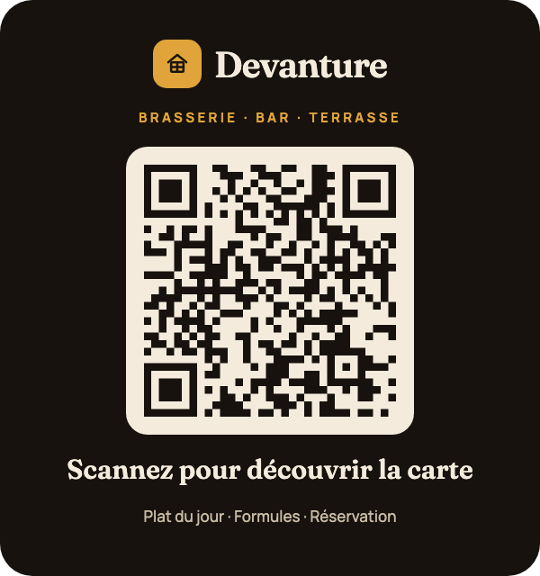

Un site internet pour votre restaurant, qui donne envie de venir
La carte à jour, les horaires, un bouton pour réserver, des photos qui donnent faim et une fiche Google Maps bien tenue : je crée des sites de restaurant pensés pour le téléphone, là où vos clients cherchent où manger.
Ce qu'un client veut trouver en dix secondes
La carte, lisible sur téléphone
Une vraie page de carte en texte, pas un PDF qu'on zoome : Google peut la lire, et vous pouvez la changer.
Réserver en deux gestes
Un bouton de réservation visible sur chaque page, relié à votre outil de réservation ou tout simplement à un appel.
Google Maps et avis
Je crée ou reprends votre fiche Google Maps pour que vous apparaissiez quand quelqu'un cherche où manger.
Des photos qui donnent faim
Reportage photo professionnel en option, ou retouche de vos propres photos par IA.
Horaires toujours justes
Jours de fermeture et horaires exceptionnels à jour, sur le site comme sur Google.
Pour les clients étrangers
Une version anglaise ou dans d'autres langues, relue, pour les voyageurs et la clientèle internationale.
Essayez la carte comme vos clients
Voici ce que voit un client qui scanne le QR code posé sur sa table. Touchez, faites défiler, changez de langue : tout fonctionne. Restaurant, plats et prix sont inventés pour l'exemple.
- Un QR code sur chaque table, qui ouvre la carte en une seconde
- Plat du jour et formules changés chaque matin depuis votre téléphone (avec le back-office)
- Filtres végétarien et sans gluten
- Français et anglais d'un geste
- Réserver, laisser un avis Google, Instagram : un bouton chacun

Des QR codes fournis, faits pour durer
- Prêts à imprimerChevalets de table, vitrine, flyers, cartes de visite : je vous les livre dans le bon format.
- Accessibles 24h/24, 7j/7Le QR code mène directement à votre site. Pas d'abonnement ni de service intermédiaire qui peut le couper du jour au lendemain.
- Il ne change jamaisVous changez la carte, les prix ou le plat du jour : le QR code imprimé reste le même, pour toujours.
Ce qui sert vraiment à un restaurant
- QR codes de table fournis, prêts à imprimer
- Back-office pour changer la carte et les horaires vous-même
- Reportage photo de la salle et des plats
- Vidéo de présentation, tournée ou créée par IA
- Fiche Google Maps et pages Facebook ou X activées
- Site en plusieurs langues, relu
Ce qu'on me demande le plus souvent
Puis-je modifier ma carte moi-même ?
Oui, avec l'option back-office : vous changez plats, prix et horaires depuis un téléphone ou un ordinateur, sans passer par moi.
Le site peut-il prendre des réservations ?
Oui. Il peut s'appuyer sur l'outil de réservation que vous utilisez déjà, ou simplement mettre en avant l'appel et l'email si vous préférez garder la main.
Le QR code peut-il cesser de fonctionner ?
Pas le mien : il mène directement à votre site, sans service intermédiaire ni abonnement. Beaucoup de QR codes « dynamiques » gratuits s'arrêtent à la fin de l'essai ; celui-ci reste valable tant que votre site existe, et ne change jamais.
Une carte en PDF ne suffit pas ?
Un PDF se lit mal sur téléphone et Google le comprend moins bien qu'une page. Une carte en texte vous aide à apparaître quand quelqu'un cherche un plat ou un type de cuisine.
Prêt à avoir un site qui travaille vraiment pour vous ?
Un premier échange gratuit, sans engagement, pour parler de votre activité et de ce dont vous avez besoin.